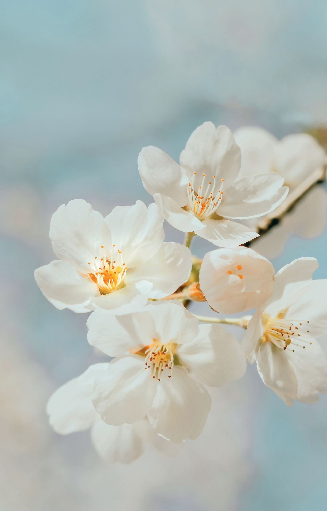
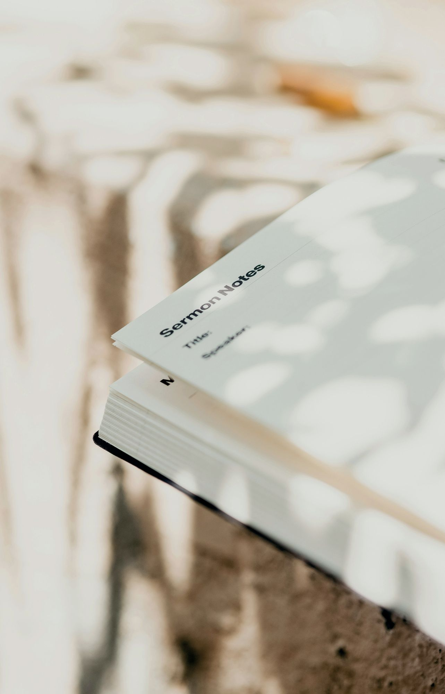

San Pietro Apostolo (CZ) — Letture nel Borgo
Premio Letterario Kerasion
Scoprire la rassegna
“Letture nel Borgo” non è mai stato così facile
La Rassegna
All'interno della
Rassegna Culturale “Letture nel Borgo”,
il Comune di San Pietro Apostolo indice il Premio Letterario “Kerasion”
Scopri il Premio

Quattro sezioni, un solo frutto: la ciliegia
I vincitori dell'edizione 2025
- NarrativaMassimo Felice Nisticò — Namless (Rubbettino)
- PoesiaAntonella Scaramuzzino — La stanza dei fanciulli o dell'amore mancato
- SaggioGiuseppe Caridi — saggio storico sul Cardinale Ruffo e il 1799
- Carlo A. Dalla ChiesaAnna Sergi — L'inferno ammobiliato